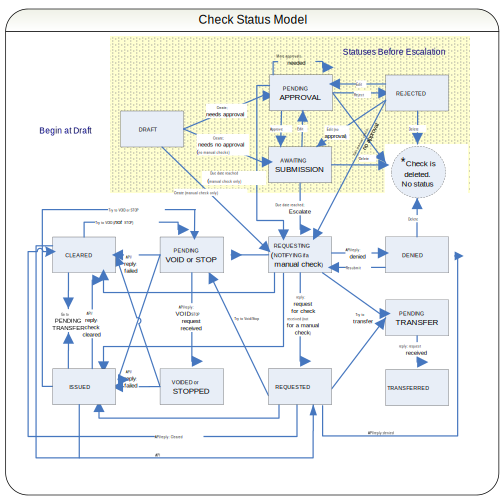

Lifecycles of checks
The following high-level flow diagram and table summarize all check statuses and how they relate to approval status. Bulk invoice checks are not included in the diagram or the table.

Notes
- To modify a Denied check you must clone it.
- Some statuses advance either by web service APIs or through the user interface, which the diagram does not show explicitly. See:
Approval |
Check Status |
Edit |
Delete |
Comment |
|---|---|---|---|---|
Unapproved |
Draft |
yes, from cloned or reissued checks |
yes |
Saving the entity changes the status to Unapproved. |
Unapproved |
Pending Approval |
yes, including recurrence settings |
yes |
Waiting for approval. |
Approved |
Awaiting Submission |
yes, except payments, recurrences |
yes |
Approved, in queue to go downstream. |
Approved |
Requesting |
no, but can reissue after stop/void |
stop, void |
Issue date reached and check request sent. |
Approved |
Requested |
no, but can reissue after stop/void |
stop, void |
Downstream acknowledgment of check request. |
Approved |
Issued |
no, check is issued |
stop, void |
Notification to ClaimCenter—check issued. |
Approved |
Cleared |
no, check cashed or EFT completed |
void only |
Notification to ClaimCenter—check cleared. |
Approved |
Notifying |
no, for manual checks only, sent instead of Requesting |
stop, void |
Notification to ClaimCenter—check issued. |
Approved |
Pending Void |
no |
no |
Void attempt sent downstream. |
Approved |
Voided |
no |
no |
Notification to ClaimCenter—check voided. |
Approved |
Pending Stop |
no |
no |
Stop attempt sent downstream. |
Approved |
Stopped |
no |
no |
Notification to ClaimCenter—check stopped. |
Approved |
Pending Transfer |
no, moving to another claim |
no |
Transfer notification sent downstream. |
Approved |
Transferred |
no |
no |
Sent to ClaimCenter—downstream acknowledgment of check request. |
Approved |
Reissued |
no |
no |
From Stop/Void, Reissued, Pending Approval. |
Rejected |
Rejected |
yes, all fields, if claim open |
yes |
From Pending Approval if Rejected. |
former status |
Denied |
no |
yes |
Reply from downstream—affects Payments |